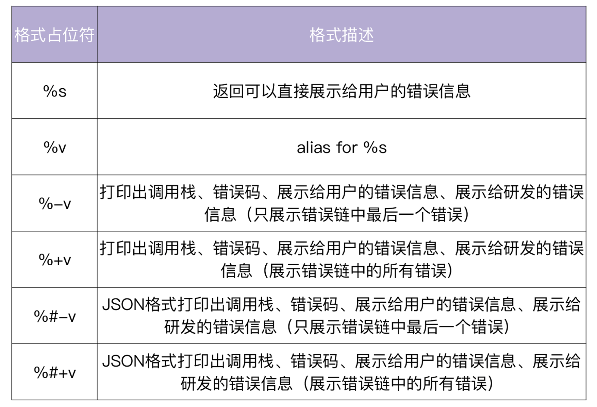
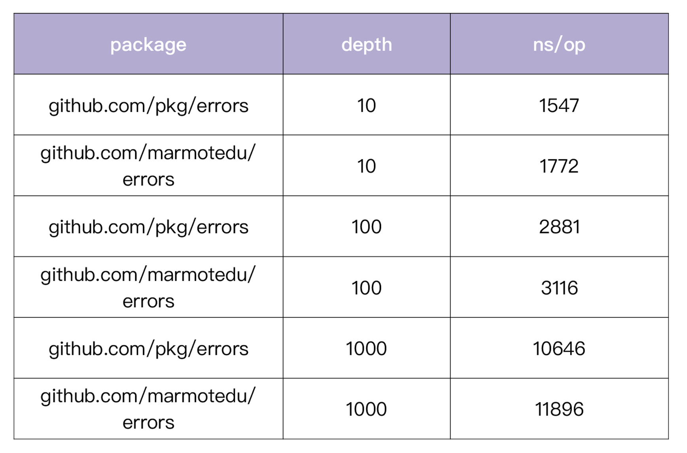

- 00 开篇词 从 0 开始搭建一个企业级 Go 应用.md.html
- 01 IAM系统概述：我们要实现什么样的 Go 项目？.md.html
- 02 环境准备：如何安装和配置一个基本的 Go 开发环境？.md.html
- 03 项目部署：如何快速部署 IAM 系统？.md.html
- 04 规范设计（上）：项目开发杂乱无章，如何规范？.md.html
- 05 规范设计（下）：commit 信息风格迥异、难以阅读，如何规范？.md.html
- 06 目录结构设计：如何组织一个可维护、可扩展的代码目录？.md.html
- 07 工作流设计：如何设计合理的多人开发模式？.md.html
- 08 研发流程设计（上）：如何设计 Go 项目的开发流程？.md.html
- 09 研发流程设计（下）：如何管理应用的生命周期？.md.html
- 10 设计方法：怎么写出优雅的 Go 项目？.md.html
- 11 设计模式：Go常用设计模式概述.md.html
- 12 API 风格（上）：如何设计RESTful API？.md.html
- 13 API 风格（下）：RPC API介绍.md.html
- 14 项目管理：如何编写高质量的Makefile？.md.html
- 15 研发流程实战：IAM项目是如何进行研发流程管理的？.md.html
- 16 代码检查：如何进行静态代码检查？.md.html
- 17 API 文档：如何生成 Swagger API 文档 ？.md.html
- 18 错误处理（上）：如何设计一套科学的错误码？.md.html
- 19 错误处理（下）：如何设计错误包？.md.html
- 20 日志处理（上）：如何设计日志包并记录日志？.md.html
- 21 日志处理（下）：手把手教你从 0 编写一个日志包.md.html
- 22 应用构建三剑客：Pflag、Viper、Cobra 核心功能介绍.md.html
- 23 应用构建实战：如何构建一个优秀的企业应用框架？.md.html
- 24 Web 服务：Web 服务核心功能有哪些，如何实现？.md.html
- 25 认证机制：应用程序如何进行访问认证？.md.html
- 26 IAM项目是如何设计和实现访问认证功能的？.md.html
- 27 权限模型：5大权限模型是如何进行资源授权的？.md.html
- 28 控制流（上）：通过iam-apiserver设计，看Web服务的构建.md.html
- 29 控制流（下）：iam-apiserver服务核心功能实现讲解.md.html
- 30 ORM：CURD 神器 GORM 包介绍及实战.md.html
- 31 数据流：通过iam-authz-server设计，看数据流服务的设计.md.html
- 32 数据处理：如何高效处理应用程序产生的数据？.md.html
- 33 SDK 设计（上）：如何设计出一个优秀的 Go SDK？.md.html
- 34 SDK 设计（下）：IAM项目Go SDK设计和实现.md.html
- 35 效率神器：如何设计和实现一个命令行客户端工具？.md.html
- 36 代码测试（上）：如何编写 Go 语言单元测试和性能测试用例？.md.html
- 37 代码测试（下）：Go 语言其他测试类型及 IAM 测试介绍.md.html
- 38 性能分析（上）：如何分析 Go 语言代码的性能？.md.html
- 39 性能分析（下）：API Server性能测试和调优实战.md.html
- 40 软件部署实战（上）：部署方案及负载均衡、高可用组件介绍.md.html
- 41 软件部署实战（中）：IAM 系统生产环境部署实战.md.html
- 42 软件部署实战（下）：IAM系统安全加固、水平扩缩容实战.md.html
- 43 技术演进（上）：虚拟化技术演进之路.md.html
- 44 技术演进（下）：软件架构和应用生命周期技术演进之路.md.html
- 45 基于Kubernetes的云原生架构设计.md.html
- 46 如何制作Docker镜像？.md.html
- 47 如何编写Kubernetes资源定义文件？.md.html
- 48 IAM 容器化部署实战.md.html
- 49 服务编排（上）：Helm服务编排基础知识.md.html
- 50 服务编排（下）：基于Helm的服务编排部署实战.md.html
- 51 基于 GitHub Actions 的 CI 实战.md.html
- 特别放送 Go Modules依赖包管理全讲.md.html
- 特别放送 Go Modules实战.md.html
- 特别放送 IAM排障指南.md.html
- 特别放送 分布式作业系统设计和实现.md.html
- 特别放送 给你一份Go项目中最常用的Makefile核心语法.md.html
- 特别放送 给你一份清晰、可直接套用的Go编码规范.md.html
- 直播加餐 如何从小白进阶成 Go 语言专家？.md.html
- 结束语 如何让自己的 Go 研发之路走得更远？.md.html
- 捐赠
19 错误处理（下）：如何设计错误包？
你好，我是孔令飞。
在Go项目开发中，错误是我们必须要处理的一个事项。除了我们上一讲学习过的错误码，处理错误也离不开错误包。
业界有很多优秀的、开源的错误包可供选择，例如Go标准库自带的errors包、github.com/pkg/errors包。但是这些包目前还不支持业务错误码，很难满足生产级应用的需求。所以，在实际开发中，我们有必要开发出适合自己错误码设计的错误包。当然，我们也没必要自己从0开发，可以基于一些优秀的包来进行二次封装。
这一讲里，我们就来一起看看，如何设计一个错误包来适配上一讲我们设计的错误码，以及一个错误码的具体实现。
错误包需要具有哪些功能？
要想设计一个优秀的错误包，我们首先得知道一个优秀的错误包需要具备哪些功能。在我看来，至少需要有下面这六个功能：
首先，应该能支持错误堆栈。我们来看下面一段代码，假设保存在bad.go文件中：
package main
import (
"fmt"
"log"
)
func main() {
if err := funcA(); err != nil {
log.Fatalf("call func got failed: %v", err)
return
}
log.Println("call func success")
}
func funcA() error {
if err := funcB(); err != nil {
return err
}
return fmt.Errorf("func called error")
}
func funcB() error {
return fmt.Errorf("func called error")
}
执行上面的代码：
$ go run bad.go
2021/07/02 08:06:55 call func got failed: func called error
exit status 1
这时我们想定位问题，但不知道具体是哪行代码报的错误，只能靠猜，还不一定能猜到。为了解决这个问题，我们可以加一些Debug信息，来协助我们定位问题。这样做在测试环境是没问题的，但是在线上环境，一方面修改、发布都比较麻烦，另一方面问题可能比较难重现。这时候我们会想，要是能打印错误的堆栈就好了。例如：
2021/07/02 14:17:03 call func got failed: func called error
main.funcB
/home/colin/workspace/golang/src/github.com/marmotedu/gopractise-demo/errors/good.go:27
main.funcA
/home/colin/workspace/golang/src/github.com/marmotedu/gopractise-demo/errors/good.go:19
main.main
/home/colin/workspace/golang/src/github.com/marmotedu/gopractise-demo/errors/good.go:10
runtime.main
/home/colin/go/go1.16.2/src/runtime/proc.go:225
runtime.goexit
/home/colin/go/go1.16.2/src/runtime/asm_amd64.s:1371
exit status 1
通过上面的错误输出，我们可以很容易地知道是哪行代码报的错，从而极大提高问题定位的效率，降低定位的难度。所以，在我看来，一个优秀的errors包，首先需要支持错误堆栈。
其次，能够支持不同的打印格式。例如%+v、%v、%s等格式，可以根据需要打印不同丰富度的错误信息。
再次，能支持Wrap/Unwrap功能，也就是在已有的错误上，追加一些新的信息。例如errors.Wrap(err, "open file failed") 。Wrap通常用在调用函数中，调用函数可以基于被调函数报错时的错误Wrap一些自己的信息，丰富报错信息，方便后期的错误定位，例如：
func funcA() error {
if err := funcB(); err != nil {
return errors.Wrap(err, "call funcB failed")
}
return errors.New("func called error")
}
func funcB() error {
return errors.New("func called error")
}
这里要注意，不同的错误类型，Wrap函数的逻辑也可以不同。另外，在调用Wrap时，也会生成一个错误堆栈节点。我们既然能够嵌套error，那有时候还可能需要获取被嵌套的error，这时就需要错误包提供Unwrap函数。
还有，错误包应该有Is方法。在实际开发中，我们经常需要判断某个error是否是指定的error。在Go 1.13之前，也就是没有wrapping error的时候，我们要判断error是不是同一个，可以使用如下方法：
if err == os.ErrNotExist {
// normal code
}
但是现在，因为有了wrapping error，这样判断就会有问题。因为你根本不知道返回的err是不是一个嵌套的error，嵌套了几层。这种情况下，我们的错误包就需要提供Is函数：
func Is(err, target error) bool
当err和target是同一个，或者err是一个wrapping error的时候，如果target也包含在这个嵌套error链中，返回true，否则返回fasle。
另外，错误包应该支持 As 函数。
在Go 1.13之前，没有wrapping error的时候，我们要把error转为另外一个error，一般都是使用type assertion或者type switch，也就是类型断言。例如：
if perr, ok := err.(*os.PathError); ok {
fmt.Println(perr.Path)
}
但是现在，返回的err可能是嵌套的error，甚至好几层嵌套，这种方式就不能用了。所以，我们可以通过实现 As 函数来完成这种功能。现在我们把上面的例子，用 As 函数实现一下：
var perr *os.PathError
if errors.As(err, &perr) {
fmt.Println(perr.Path)
}
这样就可以完全实现类型断言的功能，而且还更强大，因为它可以处理wrapping error。
最后，能够支持两种错误创建方式：非格式化创建和格式化创建。例如：
errors.New("file not found")
errors.Errorf("file %s not found", "iam-apiserver")
上面，我们介绍了一个优秀的错误包应该具备的功能。一个好消息是，Github上有不少实现了这些功能的错误包，其中github.com/pkg/errors包最受欢迎。所以，我基于github.com/pkg/errors包进行了二次封装，用来支持上一讲所介绍的错误码。
错误包实现
明确优秀的错误包应该具备的功能后，我们来看下错误包的实现。实现的源码存放在github.com/marmotedu/errors。
我通过在文件github.com/pkg/errors/errors.go中增加新的withCode结构体，来引入一种新的错误类型，该错误类型可以记录错误码、stack、cause和具体的错误信息。
type withCode struct {
err error // error 错误
code int // 业务错误码
cause error // cause error
*stack // 错误堆栈
}
下面，我们通过一个示例，来了解下github.com/marmotedu/errors所提供的功能。假设下述代码保存在errors.go文件中：
package main
import (
"fmt"
"github.com/marmotedu/errors"
code "github.com/marmotedu/sample-code"
)
func main() {
if err := bindUser(); err != nil {
// %s: Returns the user-safe error string mapped to the error code or the error message if none is specified.
fmt.Println("====================> %s <====================")
fmt.Printf("%s\n\n", err)
// %v: Alias for %s.
fmt.Println("====================> %v <====================")
fmt.Printf("%v\n\n", err)
// %-v: Output caller details, useful for troubleshooting.
fmt.Println("====================> %-v <====================")
fmt.Printf("%-v\n\n", err)
// %+v: Output full error stack details, useful for debugging.
fmt.Println("====================> %+v <====================")
fmt.Printf("%+v\n\n", err)
// %#-v: Output caller details, useful for troubleshooting with JSON formatted output.
fmt.Println("====================> %#-v <====================")
fmt.Printf("%#-v\n\n", err)
// %#+v: Output full error stack details, useful for debugging with JSON formatted output.
fmt.Println("====================> %#+v <====================")
fmt.Printf("%#+v\n\n", err)
// do some business process based on the error type
if errors.IsCode(err, code.ErrEncodingFailed) {
fmt.Println("this is a ErrEncodingFailed error")
}
if errors.IsCode(err, code.ErrDatabase) {
fmt.Println("this is a ErrDatabase error")
}
// we can also find the cause error
fmt.Println(errors.Cause(err))
}
}
func bindUser() error {
if err := getUser(); err != nil {
// Step3: Wrap the error with a new error message and a new error code if needed.
return errors.WrapC(err, code.ErrEncodingFailed, "encoding user 'Lingfei Kong' failed.")
}
return nil
}
func getUser() error {
if err := queryDatabase(); err != nil {
// Step2: Wrap the error with a new error message.
return errors.Wrap(err, "get user failed.")
}
return nil
}
func queryDatabase() error {
// Step1. Create error with specified error code.
return errors.WithCode(code.ErrDatabase, "user 'Lingfei Kong' not found.")
}
上述代码中，通过WithCode函数来创建新的withCode类型的错误；通过WrapC来将一个error封装成一个withCode类型的错误；通过IsCode来判断一个error链中是否包含指定的code。
withCode错误实现了一个func (w *withCode) Format(state fmt.State, verb rune)方法，该方法用来打印不同格式的错误信息，见下表：

例如，%+v会打印以下错误信息：
get user failed. - #1 [/home/colin/workspace/golang/src/github.com/marmotedu/gopractise-demo/errors/errortrack_errors.go:19 (main.getUser)] (100101) Database error; user 'Lingfei Kong' not found. - #0 [/home/colin/workspace/golang/src/github.com/marmotedu/gopractise-demo/errors/errortrack_errors.go:26 (main.queryDatabase)] (100101) Database error
那么你可能会问，这些错误信息中的100101错误码，还有Database error这种对外展示的报错信息等等，是从哪里获取的？这里我简单解释一下。
首先， withCode 中包含了int类型的错误码，例如100101。
其次，当使用github.com/marmotedu/errors包的时候，需要调用Register或者MustRegister，将一个Coder注册到github.com/marmotedu/errors开辟的内存中，数据结构为：
var codes = map[int]Coder{}
Coder是一个接口，定义为：
type Coder interface {
// HTTP status that should be used for the associated error code.
HTTPStatus() int
// External (user) facing error text.
String() string
// Reference returns the detail documents for user.
Reference() string
// Code returns the code of the coder
Code() int
}
这样 withCode 的Format方法，就能够通过 withCode 中的code字段获取到对应的Coder，并通过Coder提供的HTTPStatus、String、Reference、Code函数，来获取 withCode 中code的详细信息，最后格式化打印。
这里要注意，我们实现了两个注册函数：Register和MustRegister，二者唯一区别是：当重复定义同一个错误Code时，MustRegister会panic，这样可以防止后面注册的错误覆盖掉之前注册的错误。在实际开发中，建议使用MustRegister。
XXX()和MustXXX()的函数命名方式，是一种Go代码设计技巧，在Go代码中经常使用，例如Go标准库中regexp包提供的Compile和MustCompile函数。和XXX相比，MustXXX 会在某种情况不满足时panic。因此使用MustXXX的开发者看到函数名就会有一个心理预期：使用不当，会造成程序panic。
最后，我还有一个建议：在实际的生产环境中，我们可以使用JSON格式打印日志，JSON格式的日志可以非常方便的供日志系统解析。我们可以根据需要，选择%#-v或%#+v两种格式。
错误包在代码中，经常被调用，所以我们要保证错误包一定要是高性能的，否则很可能会影响接口的性能。这里，我们再来看下github.com/marmotedu/errors包的性能。
在这里，我们把这个错误包跟go标准库的 errors 包，以及 github.com/pkg/errors 包进行对比，来看看它们的性能：
$ go test -test.bench=BenchmarkErrors -benchtime="3s"
goos: linux
goarch: amd64
pkg: github.com/marmotedu/errors
BenchmarkErrors/errors-stack-10-8 57658672 61.8 ns/op 16 B/op 1 allocs/op
BenchmarkErrors/pkg/errors-stack-10-8 2265558 1547 ns/op 320 B/op 3 allocs/op
BenchmarkErrors/marmot/errors-stack-10-8 1903532 1772 ns/op 360 B/op 5 allocs/op
BenchmarkErrors/errors-stack-100-8 4883659 734 ns/op 16 B/op 1 allocs/op
BenchmarkErrors/pkg/errors-stack-100-8 1202797 2881 ns/op 320 B/op 3 allocs/op
BenchmarkErrors/marmot/errors-stack-100-8 1000000 3116 ns/op 360 B/op 5 allocs/op
BenchmarkErrors/errors-stack-1000-8 505636 7159 ns/op 16 B/op 1 allocs/op
BenchmarkErrors/pkg/errors-stack-1000-8 327681 10646 ns/op 320 B/op 3 allocs/op
BenchmarkErrors/marmot/errors-stack-1000-8 304160 11896 ns/op 360 B/op 5 allocs/op
PASS
ok github.com/marmotedu/errors 39.200s
可以看到github.com/marmotedu/errors和github.com/pkg/errors包的性能基本持平。在对比性能时，重点关注ns/op，也即每次error操作耗费的纳秒数。另外，我们还需要测试不同error嵌套深度下的error操作性能，嵌套越深，性能越差。例如：在嵌套深度为10的时候， github.com/pkg/errors 包ns/op值为1547， github.com/marmotedu/errors 包ns/op值为1772。可以看到，二者性能基本保持一致。
具体性能数据对比见下表：

我们是通过BenchmarkErrors测试函数来测试error包性能的，你感兴趣可以打开链接看看。
如何记录错误？
上面，我们一起看了怎么设计一个优秀的错误包，那如何用我们设计的错误包来记录错误呢？
根据我的开发经验，我推荐两种记录错误的方式，可以帮你快速定位问题。
方式一：通过github.com/marmotedu/errors包提供的错误堆栈能力，来跟踪错误。
具体你可以看看下面的代码示例。以下代码保存在errortrack_errors.go中。
package main
import (
"fmt"
"github.com/marmotedu/errors"
code "github.com/marmotedu/sample-code"
)
func main() {
if err := getUser(); err != nil {
fmt.Printf("%+v\n", err)
}
}
func getUser() error {
if err := queryDatabase(); err != nil {
return errors.Wrap(err, "get user failed.")
}
return nil
}
func queryDatabase() error {
return errors.WithCode(code.ErrDatabase, "user 'Lingfei Kong' not found.")
}
执行上述的代码：
$ go run errortrack_errors.go
get user failed. - #1 [/home/colin/workspace/golang/src/github.com/marmotedu/gopractise-demo/errors/errortrack_errors.go:19 (main.getUser)] (100101) Database error; user 'Lingfei Kong' not found. - #0 [/home/colin/workspace/golang/src/github.com/marmotedu/gopractise-demo/errors/errortrack_errors.go:26 (main.queryDatabase)] (100101) Database error
可以看到，打印的日志中打印出了详细的错误堆栈，包括错误发生的函数、文件名、行号和错误信息，通过这些错误堆栈，我们可以很方便地定位问题。
你使用这种方法时，我推荐的用法是，在错误最开始处使用 errors.WithCode() 创建一个 withCode类型的错误。上层在处理底层返回的错误时，可以根据需要，使用Wrap函数基于该错误封装新的错误信息。如果要包装的error不是用github.com/marmotedu/errors包创建的，建议用 errors.WithCode() 新建一个error。
方式二：在错误产生的最原始位置调用日志包记录函数，打印错误信息，其他位置直接返回（当然，也可以选择性的追加一些错误信息，方便故障定位）。示例代码（保存在errortrack_log.go）如下：
package main
import (
"fmt"
"github.com/marmotedu/errors"
"github.com/marmotedu/log"
code "github.com/marmotedu/sample-code"
)
func main() {
if err := getUser(); err != nil {
fmt.Printf("%v\n", err)
}
}
func getUser() error {
if err := queryDatabase(); err != nil {
return err
}
return nil
}
func queryDatabase() error {
opts := &log.Options{
Level: "info",
Format: "console",
EnableColor: true,
EnableCaller: true,
OutputPaths: []string{"test.log", "stdout"},
ErrorOutputPaths: []string{},
}
log.Init(opts)
defer log.Flush()
err := errors.WithCode(code.ErrDatabase, "user 'Lingfei Kong' not found.")
if err != nil {
log.Errorf("%v", err)
}
return err
}
执行以上代码：
$ go run errortrack_log.go
2021-07-03 14:37:31.597 ERROR errors/errortrack_log.go:41 Database error
Database error
当错误发生时，调用log包打印错误。通过log包的caller功能，可以定位到log语句的位置，也就是定位到错误发生的位置。你使用这种方式来打印日志时，我有两个建议。
- 只在错误产生的最初位置打印日志，其他地方直接返回错误，一般不需要再对错误进行封装。
- 当代码调用第三方包的函数时，第三方包函数出错时打印错误信息。比如：
if err := os.Chdir("/root"); err != nil {
log.Errorf("change dir failed: %v", err)
}
一个错误码的具体实现
接下来，我们看一个依据上一讲介绍的错误码规范的具体错误码实现github.com/marmotedu/sample-code。
sample-code实现了两类错误码，分别是通用错误码（sample-code/base.go）和业务模块相关的错误码（sample-code/apiserver.go）。
首先，我们来看通用错误码的定义：
// 通用: 基本错误
// Code must start with 1xxxxx
const (
// ErrSuccess - 200: OK.
ErrSuccess int = iota + 100001
// ErrUnknown - 500: Internal server error.
ErrUnknown
// ErrBind - 400: Error occurred while binding the request body to the struct.
ErrBind
// ErrValidation - 400: Validation failed.
ErrValidation
// ErrTokenInvalid - 401: Token invalid.
ErrTokenInvalid
)
在代码中，我们通常使用整型常量（ErrSuccess）来代替整型错误码（100001），因为使用ErrSuccess时，一看就知道它代表的错误类型，可以方便开发者使用。
错误码用来指代一个错误类型，该错误类型需要包含一些有用的信息，例如对应的HTTP Status Code、对外展示的Message，以及跟该错误匹配的帮助文档。所以，我们还需要实现一个Coder来承载这些信息。这里，我们定义了一个实现了github.com/marmotedu/errors.Coder接口的ErrCode结构体：
// ErrCode implements `github.com/marmotedu/errors`.Coder interface.
type ErrCode struct {
// C refers to the code of the ErrCode.
C int
// HTTP status that should be used for the associated error code.
HTTP int
// External (user) facing error text.
Ext string
// Ref specify the reference document.
Ref string
}
可以看到ErrCode结构体包含了以下信息：
- int类型的业务码。
- 对应的HTTP Status Code。
- 暴露给外部用户的消息。
- 错误的参考文档。
下面是一个具体的Coder示例：
coder := &ErrCode{
C: 100001,
HTTP: 200,
Ext: "OK",
Ref: "https://github.com/marmotedu/sample-code/blob/master/README.md.html",
}
接下来，我们就可以调用github.com/marmotedu/errors包提供的Register或者MustRegister函数，将Coder注册到github.com/marmotedu/errors包维护的内存中。
一个项目有很多个错误码，如果每个错误码都手动调用MustRegister函数会很麻烦，这里我们通过代码自动生成的方法，来生成register函数调用：
//go:generate codegen -type=int
//go:generate codegen -type=int -doc -output ./error_code_generated.md.html
//go:generate codegen -type=int 会调用codegen工具，生成sample_code_generated.go源码文件：
func init() {
register(ErrSuccess, 200, "OK")
register(ErrUnknown, 500, "Internal server error")
register(ErrBind, 400, "Error occurred while binding the request body to the struct")
register(ErrValidation, 400, "Validation failed")
// other register function call
}
这些register调用放在init函数中，在加载程序的时候被初始化。
这里要注意，在注册的时候，我们会检查HTTP Status Code，只允许定义200、400、401、403、404、500这6个HTTP错误码。这里通过程序保证了错误码是符合HTTP Status Code使用要求的。
//go:generate codegen -type=int -doc -output ./error_code_generated.md.html会生成错误码描述文档 error_code_generated.md.html。当我们提供API文档时，也需要记着提供一份错误码描述文档，这样客户端才可以根据错误码，知道请求是否成功，以及具体发生哪类错误，好针对性地做一些逻辑处理。
codegen工具会根据错误码注释生成sample_code_generated.go和error_code_generated.md.html文件：
// ErrSuccess - 200: OK.
ErrSuccess int = iota + 100001
codegen工具之所以能够生成sample_code_generated.go和error_code_generated.md.html，是因为我们的错误码注释是有规定格式的：// <错误码整型常量> - <对应的HTTP Status Code>: <External Message>.。
codegen工具可以在IAM项目根目录下，执行以下命令来安装：
$ make tools.install.codegen
安装完 codegen 工具后，可以在 github.com/marmotedu/sample-code 包根目录下执行 go generate 命令，来生成sample_code_generated.go和error_code_generated.md.html。这里有个技巧需要你注意：生成的文件建议统一用 xxxx_generated.xx 来命名，这样通过 generated ，我们就知道这个文件是代码自动生成的，有助于我们理解和使用。
在实际的开发中，我们可以将错误码独立成一个包，放在 internal/pkg/code/目录下，这样可以方便整个应用调用。例如IAM的错误码就放在IAM项目根目录下的internal/pkg/code/目录下。
我们的错误码是分服务和模块的，所以这里建议你把相同的服务放在同一个Go源文件中，例如IAM的错误码存放文件：
$ ls base.go apiserver.go authzserver.go
apiserver.go authzserver.go base.go
一个应用中会有多个服务，例如IAM应用中，就包含了iam-apiserver、iam-authz-server、iam-pump三个服务。这些服务有一些通用的错误码，为了便于维护，可以将这些通用的错误码统一放在base.go源码文件中。其他的错误码，我们可以按服务分别放在不同的文件中：iam-apiserver服务的错误码统一放在apiserver.go文件中；iam-authz-server的错误码统一存放在authzserver.go文件中。其他服务以此类推。
另外，同一个服务中不同模块的错误码，可以按以下格式来组织：相同模块的错误码放在同一个const代码块中，不同模块的错误码放在不同的const代码块中。每个const代码块的开头注释就是该模块的错误码定义。例如：
// iam-apiserver: user errors.
const (
// ErrUserNotFound - 404: User not found.
ErrUserNotFound int = iota + 110001
// ErrUserAlreadyExist - 400: User already exist.
ErrUserAlreadyExist
)
// iam-apiserver: secret errors.
const (
// ErrEncrypt - 400: Secret reach the max count.
ErrReachMaxCount int = iota + 110101
// ErrSecretNotFound - 404: Secret not found.
ErrSecretNotFound
)
最后，我们还需要将错误码定义记录在项目的文件中，供开发者查阅、遵守和使用，例如IAM项目的错误码定义记录文档为code_specification.md.html。这个文档中记录了错误码说明、错误描述规范和错误记录规范等。
错误码实际使用方法示例
上面，我讲解了错误包和错误码的实现方式，那你一定想知道在实际开发中我们是如何使用的。这里，我就举一个在gin web框架中使用该错误码的例子：
// Response defines project response format which in marmotedu organization.
type Response struct {
Code errors.Code `json:"code,omitempty"`
Message string `json:"message,omitempty"`
Reference string `json:"reference,omitempty"`
Data interface{} `json:"data,omitempty"`
}
// WriteResponse used to write an error and JSON data into response.
func WriteResponse(c *gin.Context, err error, data interface{}) {
if err != nil {
coder := errors.ParseCoder(err)
c.JSON(coder.HTTPStatus(), Response{
Code: coder.Code(),
Message: coder.String(),
Reference: coder.Reference(),
Data: data,
})
}
c.JSON(http.StatusOK, Response{Data: data})
}
func GetUser(c *gin.Context) {
log.Info("get user function called.", "X-Request-Id", requestid.Get(c))
// Get the user by the `username` from the database.
user, err := store.Client().Users().Get(c.Param("username"), metav1.GetOptions{})
if err != nil {
core.WriteResponse(c, errors.WithCode(code.ErrUserNotFound, err.Error()), nil)
return
}
core.WriteResponse(c, nil, user)
}
上述代码中，通过WriteResponse统一处理错误。在 WriteResponse 函数中，如果err != nil，则从error中解析出Coder，并调用Coder提供的方法，获取错误相关的Http Status Code、int类型的业务码、暴露给用户的信息、错误的参考文档链接，并返回JSON格式的信息。如果 err == nil 则返回200和数据。
总结
记录错误是应用程序必须要做的一件事情，在实际开发中，我们通常会封装自己的错误包。一个优秀的错误包，应该能够支持错误堆栈、不同的打印格式、Wrap/Unwrap/Is/As等函数，并能够支持格式化创建error。
根据这些错误包设计要点，我基于 github.com/pkg/errors 包设计了IAM项目的错误包 github.com/marmotedu/errors ，该包符合我们上一讲设计的错误码规范。
另外，本讲也给出了一个具体的错误码实现 sample-code ， sample-code 支持业务Code码、HTTP Status Code、错误参考文档、可以对内对外展示不同的错误信息。
最后，因为错误码注释是有固定格式的，所以我们可以通过codegen工具解析错误码的注释，生成register函数调用和错误码文档。这种做法也体现了我一直强调的low code思想，可以提高开发效率，减少人为失误。
课后练习
- 在这门课里，我们定义了base、iam-apiserver服务的错误码，请试着定义iam-authz-server服务的错误码，并生成错误码文档。
- 思考下，这门课的错误包和错误码设计能否满足你当前的项目需求，如果觉得不能满足，可以在留言区分享你的看法。
欢迎你在留言区与我交流讨论，我们下一讲见。
© 2019 - 2023 Liangliang Lee. Powered by gin and hexo-theme-book.